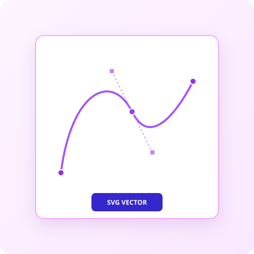

Trace Image
Transform raster images into scalable vector graphics (SVG) with clean paths.
Lower values capture more detail; higher values create smoother, simplified shapes.
Drop your image here
PNG, JPG, or WEBP (Max 10MB)
Turn Pixels into Infinite Vectors
Infinite Scalability
Convert pixel-based images into high-fidelity SVG paths that scale to any size without blurriness.
Clean Paths
Our proprietary algorithm reduces anchor point bloat to deliver lightweight, clean SVG files.
Private & Secure
Your images are processed locally in your browser and never touch any external server.

Designed for Professionals
-
check_circle
SVG & EPS Export
Compatible with all major industry-standard design tools including Illustrator and Figma.
-
check_circle
Batch Processing
Rapidly trace complex logos, icons, and geometric artwork in seconds.
-
check_circle
Browser-Based Speed
Leveraging pure client-side algorithms for desktop-grade execution speed.